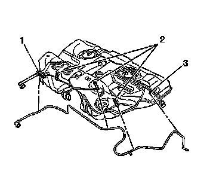

Evaporative Emissions Hose: Service and Repair
Evaporative Emission Hoses/Pipes Replacement - Chassis/Canister
Removal Procedure
Notice:
* Do not attempt to straighten kinked nylon pipes. Replace any kinked nylon pipes in order to prevent damage to the vehicle.
* Do not attempt to repair sections of nylon pipes. Replace damaged nylon pipes.
* Replace the vapor hoses/pipes with original equipment or parts that meet GM specifications.
1. Remove the fuel tank. Refer to Fuel Tank Replacement (Service and Repair) .

2. Remove the chassis to canister evaporative emission (EVAP) hose from the following:
* The body retainer (1)
* The 3 retaining features (2) on the fuel tank
* The retainer clip (3)
3. Remove the EVAP hose from the fuel tank.
Installation Procedure
1. Position the EVAP hose to the fuel tank.
2. Install the chassis to canister evaporative emission (EVAP) hose to the following:
* The body retainer (1)
* The 3 retaining features (2) on the fuel tank
* The retainer clip (3)
3. Install the fuel tank. Refer to Fuel Tank Replacement (Service and Repair) .